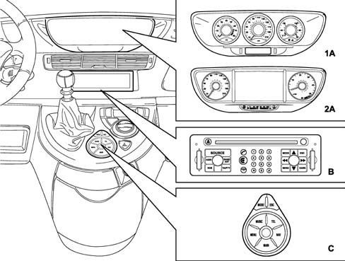
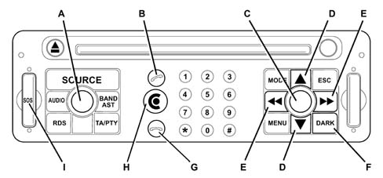
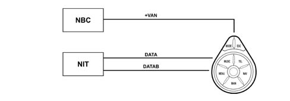
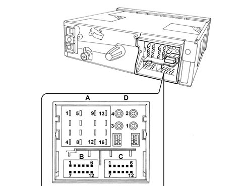

CONNECT
- Path
- Descriptions > 55 ELECTRICAL EQUIPMENT > 5505 INSTRUMENT/GAUGE ELECTRICAL CIRCUITS > 5505A MULTI-FUNCTION COMPONENTS > CONNECT
- Kind
- system description
- Applies to
- all engines; all production periods
- Interactive page
- https://sloeber94.github.io/elrnDB-fUlss/en/#/179000418
Applies to: all engines; all production periods
INTRODUCTION
The Connect is fitted in the centre of the dashboard and includes a remote control located in the centre console whilst the display of the functions is transferred to the centre of the dashboard at the instrument panel node (NQS) and transmitted via the multifunction screen node (NSC)
The system is fitted in the middle of the facia and may be used easily by the driver and passenger. It includes the following systems/services:
- Radio,
- GSM phone,
- GPS and navigation system,
- Video screen.
Guaranteeing the following functions:
- management of audio sources and outputs
- management of vehicle information and warnings
- management of video sources
- voice telephony
- single and multiple voice controls
- voice synthesis starting from text
- GPS
- navigation system
- telematics using WAP navigator
- emergency calls, trouble shooting and assistance
- configuration
- diagnostics
External ventilation is required to keep the Connect electronics at temperatures below 85°C. There is a fan managed by the system designed for this purpose. Depending on the internal temperature, the Connect controls the supply of air for the fan in the node (the fan is the brushless, electronic switching, electric type).
There are three types of aerial depending on the trim level:
- radio aerial: AM/FM amplified, with an additional supply lead, stator return
- gsm aerial: passive dual band
- gps aerial: active, supplied by the lead core
There are two types of display for the graphic representation of the functions depending on the configuration level of the Connector system:
- monochromatic display 240X64 pixel (127 X 35 mm) (LOW version)
- 7" colour screen in 16/9 format (HIGH version)
There are 3 system configuration levels: "CONNECT", "CONNECT NAV" and "CONNECT NAV +"
CONNECT
Dimensions: 1 DIN box with control panel
Modules included:
- Radio
- CD audio /CD ROM player
- GSM / Dual Band module
- Assistance services and Targa Service information
- LCD 240 x 64 graphic display and 127 x 35 mm monochromatic
- External CD CHANGER system (if present)
- WAP browser *
- TMC* (monotuner)
- Infra red interface (IRDA)*
CONNECT NAV
Dimensions: 1 DIN box with control panel
Modules included:
- Radio (Dual Turner)
- CD audio /CD ROM player
- GPS Module
- GSM / Dual Band module
- Independent navigation with pictograms and junction representation
- Assistance services and Targa Service information
- LCD 240 x 64 graphic display and 127 x 35 mm monochromatic
- External CD CHANGER system (if present)
- TMC* (Dual Turner)
- Voice synthesis
- WAP browser *
- Infra red interface (IRDA)*
CONNECT NAV +
Dimensions: 1 DIN box with control panel
Modules included:
- Radio (Dual Turner)*
- CD audio /CD ROM player
- GPS / Dual Band module
- Independent navigation with pictogram navigation maps and junction representation
- TFT 7" 16/9 graphic display
- External CD CHANGER system (if present)
- Voice recognition
- TMC* (Dual Turner)
- Voice synthesis
- WAP browser *
- Infra red interface (IRDA)*
- Audio / Video auxiliary socket (for telecamera or external DVD)
INTERNAL MODULES DESCRIPTION
The system modules or the modules to which the system can be connected for obtaining information or requesting services are different.
CD ROM PLAYER
The CONNECT systems are equipped with a CD ROM player capable of reading and managing both ROM and audio type compact discs, ROM type supports that are accepted by the "NAVIGATOR" / "CONNECTO NAV" / "CONNECT NAV +"
CD CHANGER
All the CONNECT systems are also designed to be connected to an external CD Changer and to accept analogue audio output. The device is a CLARION CD Changer with 6 CDs.
GSM MODULE (ALL CONFIGURATIONS)
All the CONNECT systems are equipped with a GSM Dual Band module and micro format SIM Card reader (that allows the user the insert a SIM Card). There is also an external microphone (for hands free use and voice recognition) and preparation for the connection of a hand set.
RADIO - CD MODULE
General specifications:
- Music audio power: 4x35W
- Tuner or dual tuner ("CONNECT NAV" and "CONNECT NAV +")
- 5 band graphic equalizer
- Easy to manage menu for the adjustment of the radio settings and any external interfaces (CD-Changer)
- Remote control on steering column switch unit and centre sondole
- Possibility of interface with external CD-Changer via ASCI-BUS line.
- Volume control according ot the speed (via VAN)
- If a voice recognition module is fitted, several of the commands can be voice-activated.
Radio specifications:
- RDS
- RDS - TMC (Traffic Message Channel).
- EON (Enhanced Other Network)
- TA (Traffic Announcements).
- Tuning on the following bands: (FM1), (FM2), (FMAS), (AM).
- Possibility of programming: 18 FM stations and 6 AM stations
- Possibility of selecting programmes via PTY (on FM bands only).
- Local/Distant setting.
- REGIONAL mode (pressing the RDS button for more than 2 seconds activates/deactivates this mode)
Audio specifications:
- Bass
- Balance
- Fader
- Loudness
- Treble.
- Soft MUTE
- HI-FI system active control
- 5 equalizing curves: PRESET (equalizing data) Rock, Jazz, Classical, USER (can be set using 5 band graphic equalizer)
- PRESET (equalizing data)
- Soft mute
CD specifications:
Motorized loading and ejection
TPM function (Track Program Memory)
Random function
Repeat
Skip
Pause
Compression: activates the CD noise dynamic reduction circuit.
Clarion CD Changer specifications
- Scan function
- Repeat track or entire cartridge function
- Random CD or random all function
- Compression: activates the CD noise dynamic reduction circuit.
OPERATION
Possible system states
Possible CONNECT statuses from the viewpoint of power supply and operation in general are as follows: OFF state, Normal state, Stand-by state (the DIN housing is on but the screen is off only if awaiting the exclusion of the +VAN signal).
Operation still depends on the "system configuration". The configuration of the system memorizes which functions the user has selected as active. The functions are: Tuner, CD, CD Changer, Telephone, Service Call and Video (Dark on/off).
OFF status
All CONNECT functions are disabled and the various hardware modules are not supplied (excluding the control panel).
NORMAL status
In the NORMAL state, the CONNECT system is fully active and all system functions are managed in accordance with the system configuration. Internal modules are operational, as are the internal communication lines. When leaving this state the configuration of the system is memorized; later on, it is restored on re-entry to the normal state (with the exception of the dark on/off which is always set at off so that the TFT display is always activated).
STAND-BY status
In this status, the CONNECT system is active but looks exactly as though it were OFF to the user. In any case the only internal module that is fully operational is the GPS.
Planned actions
Ignition
The user can switch the system on (move from OFF state to NORMAL state) by operating the:
- ON/OFF button
- SOS button (on the front panel)
- TARGA SERVICE button, pressed for a while (starts a service call)
- hand set lifting button
- inserting a CD
- turning the ignition ON (first rotation)
Deactivation
The user can switch the system off using different methods that depend on the status of the actual system.
Also, if the key is present, the ON-OFF button only switches the audio function off, whilst if the key is not present, this button switches the entire system off.
NORMAL STATE
If the key is removed and neither a telephone call or a call to the call centre is in progress, the system switches off (or moves to the OFF state), obviously after the system configuration and the backup data is saved. If a phonecall or a Service Call are in progress, a timed period will be activated before the deactivation of the CONNECT (30 mins operation without the key and without any intervention by the user on the front panel buttons or the steering column switch unit remove control).
At the end of the 30 minutes, the system will move to "economy mode" and switch off unless a telephone call or a service call is in progress.
If the system is in the NORMAL state with the key off, it may switch off for the following reasons:
- automatically if the time out described above elapses,
- through the intervention of the user pressing the ON/OFF button (unless a Service Call or a telephone call is in progress).
LANGUAGES AVAILABLE
The following languages are available for both strings of displayed text (menus) and navigation voice messages:
- French
- English
- German
- Dutch
- Italian
- Spanish
- European Portuguese
AUDIO
The possible audio sources are the standard sources (radio tuner, audio CD and CD Changer, PTY31 (program type) alarms, Traffice Announcements and an external audio/video interface only available for the CONNECT NAV +) whose specifications are described in detail later in the chapter.
Sources linked to other modules such as the telephone, telephone ringing, voice recognition and voice synthesis for navigation are considered as separate functions.
SYSTEM AUDIO STATES
Standard source
One of the standard sources is activated (possibly interrupted by a Traffic Announcement). The navigation messages are available.
Telephone call in progress
A telephone call is activated. If it is an incoming call, the source activated before the phonecall will be restored at the end of the conversation.
Telephone communication takes priority, as an audio source, over other sources (for example, there are no navigation messages during a phonecall)
Ringing
Sound to indicate incoming call. The navigation messages are not available.
Voice recognition
The dialogue between the recognizer and the user is activated. The navigation messages are not available.
The voice recognition module has two operating modes: speaker dependent and speaker independent
SPEAKER DEPENDENT VOICE COMMAND
after the user has pressed the V.R. (Voice Recognition) button on the left steering column switch unit lever, they can give a voice command (voice sample recorded previously). the module compares the sample with those in the memory and if recognized allows one of the telephone numbers in the list to be called or one of the stations programmed or a destination can be selected.
Radio voice command recording
The only way to ask for a programmed station through a voice command is, for example, to say: "radio memory 2" to switch on the 2nd station memorized on the current frequency band.
Telephone voice command recording
Whilst entering a number or name in the telephone directory, the user can associate a voice command with this item; the user initiates a learning stage where the module requests the entering and repetition of the voice command, notifying that it has been recorded.
Voice command cancellation.
The voice commands described above can be cancelled or replaced.
SPEAKER INDEPENDENT VOICE COMMAND
This function allows the management of several main functions for various applications, such as audio, telephone, sms, navigation.
LIST OF AVAILABLE VOICE COMMANDS
The voice commands allow the main system functions to be managed vocally.
To activate the system to receive voice commands, press the button located at the end of the left steering column switch unit lever.
The table contains the commands recognized by the CONNECT voice system divided into areas of competence.
Areas | Associated commands |
|---|---|
Main menu (source selection | Radio |
Radio/CD/CD Changer/Telephone) | CD |
CD changer | |
Call | |
Radio | Listen |
Previous | |
Next | |
Memory - Number | |
Automatic search | |
CD | Listen |
Read | |
Previous track | |
Next tract | |
Track - Number | |
Random playing | |
Scan | |
Repeat | |
CD - CHANGER | Listen |
Read | |
Previous track | |
Next tract | |
Previous disc | |
Next disc | |
Disc - Number | |
Random playing | |
Scan | |
Repeat | |
Telephone | Call |
Number | |
Repeat | |
Assistance | |
Navigator | Stop driving |
Resume driving | |
Zoom - | |
Zoom + |
Example of voice command:
To recall the radio station memorized on button 3 proceed as follows:
pronounce the voice command "Radio" and the system will produce a confirmation sound.
pronounce the voice command "Memory" and the system will produce a confirmation sound.
pronounce the voice command "3" and the system will produce a confirmation sound after which the desired radio station will be tuned into.
PTY31 alarm
Due to the receipt of a PTY31 message from the tuner. The navigation messages are available.
Engine management by steering wheel
The audio module can be managed by the buttons on the steering wheel.
Tuner function
FM and AM type tuner with RDS, PTY and TA and TMC* management.
There are also the following functions: autostore (on FM bands) Regional Mode Regional, LOC / DX setting
CD audio function
The Audio CD source and function can be selected on the telematic system from the various audio sources on the Connect unit.
There are different commands available to the user both through direct buttons (front panel/steering wheel controls) which make selections from the menu on the display/screen through the voice recognition function and several commands can be voice-activated.
External CD changer management
The CD Changer source (Audio) and hence the function can be selected from amongst the various audio sources on the Connect unit. This function is only available if the CONNECT is connected to an external CD Changer of the type described previously.
The commands available to the user through the direct buttons (front panel/steering wheel controls) and those selected from the menu on the video are different. If a voice recognition module is fitted, several of the commands can be voice-activated.
NAVIGATION MANAGEMENT AND LOCATION
The navigation module receives data concerning the advance and change in direction from the vehicle sensors. This data is accumulated and processed by a specific algorhithm which, also taking into consideration the current position obtained by the GPS satellites, makes it possible to caculate the estimated positon of the vehicle (location of the vehicle).
The estimate is produced thanks to the ABS which provides information concerning the wheels to the CONNECT; the node is capable of calculating the distance and refining the GPS co-ordinates to improve the precision.
Navigation ("CONNECT NAV"/"CONNECT NAV +" only)
The navigation module is capable of carrying out the following functions.
Interface functions with other modules
TRAFFIC DATA ACQUISITION FROM TUNER MODULE.
The module receives traffic information from the tuner module via messages in the geographical areas where they are available. The information referred to is only the text type (useful message for the driver) or graphic (icon which is positioned on a map).
Route Guidance
Route Guidance involves all the activities of extracting, managing and processing the information required for guiding the user to the destination they have set.
These activities are, basically:
- ROUTE CALCULATION: Calculation of the route between the current position and the destination; automatic recalculation of the route in the case of deviation from the current route, calculation of an alternative route, if the user requests a deviation.
- ROUTE GUIDANCE (NAVIGATION): Identification of the position of the vehicle on the route (and calculation of the distance to the destination); Identification of junctions along the route; Identification of manoeuvres at the junctions along the route (and graphic and voice instructions for the user): Calculation of the distance to the next junction where the user has to make a turn; Presentation of the manoeuvre at the next junction.
- COMPLETE DATA BASE MANAGEMENT: If a map CD-ROM is present, the navigation function uses the entire data base available (map list, points of interest, etc.).
- USE OF REDUCED DATABASE WHEN CD-ROM NOT PRESENT (LISTENING TO A MUSIC CD): It is possible to listen to an audio CD in the CD player during the navigation process. Simply following the procedure described. The map CD should be inserted in the CD player for the entire duration of the entering the destination and route calculation activities. At the end of this processing, the CD ROM can be removed using the eject button. At this point the system will: 1) automatically load the route calculated into the memory; 2) eject the map CD. The audio CD can now be inserted to start listening. Under these circumstances one part of the map information is available (names of towns and names of roads) relating only to the segments of the route. In any case, the reduced data base in the CONNECT memory allows deviations to the route with automatic recalculations without the need to reinsert the CD-ROM. However, the efficiency of these recalculations depends very much on the length of the original route. When the route data in the memory is not sufficient to continue the navigation process, there is a request to reinsert the map CD. If the system is switched off during navigation without a CD ROM, the next time it is switched back on, the map CD must be inserted to access the navigation functions.
Functions seen by user
MAP DISPLAY ("CONNECT NAV +" ONLY)
If the navigation function is activated the user can select the map representation of the area with the following features on the display:
- Possible scales: from 1:10.000 up to 1:20.000.000.
- Possibility of "North up" or "Heading up"
- Colouring of specific areas (parks, water, etc.)
- Shading of roads depending on importance.
- Names of towns
- TDS-TMS* icon
- POI icones (Points of Interest) (categories: Restaurants, Hotels, Service Stations, Car Parks).
ENTERING LOCATION
Both the entering method and possible use are described.
Entering method:
- ADDRESS: This consists of providing the system with the following location details: District; Name of road: simply enter any of the words of which it is made up; Street number
- JUNCTION (2-way). Makes it possible to define a junction between two roads. The first is defined as in the previous case (district, place-name), the second road is selected from a list of roads that cross the former in the same district.
- POINTS OF INTEREST (POI). An information sequence is keyed in in order to select a particular point of interest (on which information can be obtained).
- NAME REQUEST: the district, the type of POI (hotel, station, etc.), the name of the POI (Mercure, Novotel, etc.) must be entered.
- REQUEST FOR SERVICES NEAR THE DESTINATION: the type of POI (hotel, station, etc.) must be entered, the choice is made from a list of those closest to the selected destination
- REQUEST FOR SERVICES NEAR A GENERAL ADDRESS: (screen similar to "near the destination), the type of POI (hotel, station, etc.) and the address must be entered, the choice is made from a list of those closest to the location of the vehicle.
If there is a voice recognition module, a sample voice can be associated with the address in the directory.
Location information
NAME OF ROAD BEING DRIVEN ALONG AND LOCATION. The name of the road being driven along and the district appear constantly in a special window if the map display is selected.
TRAFFIC STATE INFORMATION: The user is provided with the following traffic information starting with the RDS-TMC information described previously.
MAP ICON: the system can be configured to display the map icon for any traffic jams. There are only certain types of displays.
EXPLANATORY TEXT: An explanatory text with each event. There are two ways of accessing this text:
- If there is a map, select the icon and when confirmed the system will show a text describing the event.
- The types of event can be accessed from the menu, having selected the type, a list of all corresponding events is accessed.
CONTROLS
The controls are available at the front section in the centre of the dashboard, on the remote control in the centre console and on the steering column switch unit.

CONTROLS ON FRONT PANEL
VIEW OF THE CONNECT NAV +

There are 30 buttons and two rotary selectors (A in the diagram) (a ring nut and a button) on the front panel of the Connect
Some keys perform multiple functions that depend on the system operating conditions active at that time.
Activation of the selected function is controlled, in some cases, by the length of time for which the button is pressed (short or long push) as described in the following table.
BUTTON | OPERATING MODE | TYPE OF PRESS | DEFINITION OF THE BUTTONS |
|---|---|---|---|
Volume (A - C) | Standby | - Short | - ON with return to the last context activated before entry into Standby |
Volume (A - C) | Except standby, display only activated | - Short | - ON with return to the last context activated before entry into OFF |
Volume (A - C) | Emergency call | - Small wheel | - Telephone volume adjustment if there is a power supply, with no effect if the internal emergency power supply is operating. Note 1: in emergency call mode, there is no possibility of switching off the telematic node |
Volume (A - C) | CD, Cd Changer | - Small wheel | - Volume adjustment |
- Short | - If the ignition key is in the OFF position, general OFF; if the ignition key is not in the OFF position, the display of messages on the screen remains activated, the other applications are not valid | ||
Volume (A - C) | Telephone call in progress | - Small wheel | - Volume adjustment |
- Short | - Display of a message requiring confirmation of the telephone call interruption. If the answer is yes, telephone call interruption, otherwise awaiting the end of the call. Action depending on the position of the key as above (CD/CD Changer mode) | ||
Volume (A - C) | Audio adjustment | - Small wheel | - Changes the value of the audio parameter selected |
Volume (A - C) | Other modes | - Small wheel | - Volume adjustment |
- Short | - If the ignition key is in the OFF position, general OFF; if the ignition key is not in the OFF position, the display of messages on the screen remains activated, the other applications are not valid | ||
BAND | Tuner | - Short | - Changes the tuner mode: FM1, FM2, AM, FMAST (autostore) |
- Long | - Memorizes the most powerful local broadcasters (autostore) | ||
SOURCE | Tuner,CD,CdChanger,Audio Aux 1 | - Short | - Changes the source selection: Tuner, CD, CdChanger, Audio Aux 1. If one of the sources is missing, the source is not selected and the next source is activated. If the Audio Aux 1 input is activated by the user and a video signal is present at the corresponding input the video source is displayed on the screen. Note: access to the auxiliary audio input can be authorized or prohibited in a configuration menu. |
- Long | - Mute / Demute of audio source activated | ||
RDS | Tuner | - Short | - Move from AF ON/OFF |
- Long | - Activation / deactivation of local mode (REG ON/OFF) | ||
AUDIO | All modes | - Short | - Display of audio adjustment window (fader, balance, bass, treble, adjustments, etc.) |
TA / PTY | All modes | - Short | - TA activation / deactivation. If a TA is in progress, the announcement is stopped |
- Long | - PTY Activation / deactivation / Selection of type of programme | ||
(B) | Emergency call | - All | - No effect |
(B) | Standby | - Short | - End of standy for telematic module, move to telephone mode |
(B) | Except telephone mode | - Short | - Move to telephone mode. / Activation of telephone if it was interrupted |
(B) | Rining of telephone in progress | - Short | - Release for communication |
(B) | Telephone mode, except communication | - Short | - If number inserted by user or by voice, call the number |
In there is no number inserted, display of last 10 numbers selected by the user | |||
(B) | Telephone call in progress | - Short | - If there is a double call signal, access to the second call and move to 1st call/2nd call |
- Long | - Move/exit from "secret" mode | ||
(G) | Emergency call | - All | - No effect |
(G) | Except telephone mode | - Long | - Prohibition / authorization for all incoming calls |
(G) | Rining of telephone in progress | - Short | - Refusal to take the line |
(G) | Telephone call in progress | - Short | - Reconnection of the line |
Targa Service (H) | Not supplied | - Long | - Call to search for faults using internal emergency power supply |
Targa Service (H) | Standby | - Long | - Call to search for faults. In there is a communication in progress, reconnection before call to search for faults |
Targa Service (H) | Emergency call | - All | - No effect |
Targa Service (H) | Other modes supplied | - Short | - Display of Services menu. This menu makes it possbile to access a collection of telematic services, including the call to search for faults |
- Long | - Call to search for faults. In there is a communication in progress, reconnection before call to search for faults. Allows the call to search for faults without access to the menus | ||
Targa Service (H) | All the modes without power supply | - Long | - Call to search for faults. In there is a communication in progress, reconnection before call to search for faults |
ESC | Entering mode | - Short | - Exit from the menu or from the current entering item with abbandoning of the entering in progress. Return to the previous ramification level |
- Long | - Deletion of the action in progress and end of the menu | ||
MODE | Emergency call | - All | - No effect |
MODE | Tuner,CD, CdChangerAudio Aux1 - Audio adjustment - Entering modes - Telematic services | - Short | - Modification of the type of display: |
NAV only, NAV + audio source activated NAV + on board computer | |||
For the version without NAV, the NAV information is replaced by GPS information. | |||
MENU | Emergency call | - All | - No effect |
MENU | Other modes supplied | - Short | - Display of main menu |
- Long | - Display of help menu | ||
DARK (F) | All the modes except standby | - Short | - Activation of the DARK sequences: move from normal brightness to black panel. The NBC warning messages should be displayed in the dark mode |
Note: at the end of standby for the RT3, the screen returns to the mode it was in before. | |||
Left arrow Right arrow (E) | Tuner | - Simple | - Search for previous/next radio frequency (automatic mode) |
- Second press | - Right mode manual move | ||
Left arrow Right arrow (E) | CD, Cd Changer | - Simple | - Previous/next track (CD or CD Changer) |
- Continuous | - Rapid backward/forward in current track | ||
Left arrow Right arrow (E) | Entering mode | - Short | - Movement in entering |
Left arrow (E) | Entering mode | - Short | - DEL button (delete last character) |
Left arrow Right arrow (E) | Navigation system | - Simple | - Horizontal movement to position of the map displayed |
- Continuous | - Continuous horizontal movement on the map displayed | ||
Up arrow Down arrow (D) | Tuner | - Simple | - Incease/decrease frequency position (manual mode) |
- Continuous | - Continuous incease/decrease in frequency position (manual mode) | ||
Up arrow Down arrow (D) | Cd Changer | - Short | - previous/next CD |
Up arrow Down arrow (D) | Entering mode | - Short | - If there is no small wheel, movement by one item in the menu |
Up arrow Down arrow (D) | Navigation system | - Simple | - Vertical movement of one position on the map displayed |
- Continuous | - Continuous vertical movement on the map displayed | ||
Pressing button (A - C) | Emergency call | - Short | - Cancelling the emergency call procedure if the cancellation window is present on the screen |
Pressing button (A - C) | Entering mode | - Short | - Validation of insertion or field selected |
- Small wheel | - Movement by one item in the menu / adjustment of linear scale parameters | ||
Pressing button (A - C) | Navigation system | - Short | - Move/exit from map ZOOM mode |
- Small wheel | - ZOOM+ / ZOOM- | ||
from 0 to 9 | Tuner | - Short | - Recall of programmed station from 1 to 10 (Button 0 corresponds to memory 10) |
- Long | - Programming current station in memory from 1 to 10 | ||
from 0 to 9 | Cd Changer | - Short | - Selecting CD from 1 to 10 on the basis of the possibilities of the CD Changer (Button 0 corresponds to memory 10) |
from 0 to 9 | Entering mode | - Short | - Entering digit or menu input selection according to the configuration of the screen |
from 0 to 9, # | Telephone call in progress | - Short | - Sending DTMF tone |
SOS (Emergency call (I) | All modes except automatic emergency call | - < 2 seconds | - No effect |
- Between 2 and 8 secs. | - Manual emergency call using internal emergency power supply if there is no primary power supply | ||
- > 8 s | - LED flashing 2 seconds, no emergency call sent |
REMOTE CONTROL
The remote controls on the centre console are illustrated below
The panel is interfaced with the VAN and is designed to make selections for the main CONNECT functions rapidly via the buttons for the management of the multiwindow display:
- MODE: allows the selection of all the screens for the various functions
- ESCAPE: returns to the previous mode
- MENU: access to the various functions
- TELEPHONE (TEL): telephone functions
- NAVIGATION SYSTEM (NAV): navigation functions
- MAIN: button for activating the main screen (default selection)
- AUDIO (MUSIC): audio functions
- SMALL WHEEL (number of positions + direction of rotation): turning selects the function whilst pressing confirms the selection.
The operating logic is illustrated below

The telematic remote control depends on the telematic module. It transmits the state of the buttons through the response mechanism in the sequence. The remote telematic control operates the NBC via the VAN, sending an end of Standby question to the network if the telephone information is activated.
Remote control 6-way connector pin out
Pin | Function |
|---|---|
1 | Not connected |
2 | + VAN |
3 | DATA |
4 | DATAB |
5 | Earth |
6 | Not connected |
CONTROLS ON THE STEERING WHEEL
The controls for the main functions of the CONNECT are duplicated on the steering wheel for greater ease.
The left steering column switch unit lever (end button) is designed for:
- voice recognition activation (press briefly)
- last message repetition (press for a while) on the right lever (end button)
- Trip computer activation
- Trip rest (press for a while)
On the right steering column switch unit lever:
- end button: change the audio source or validate graphic object on the screen, button designed for incoming phonecall or telephone call in progress)
- + and - volume buttons: increases or decreases the volume whilst pressing both simultaneously produces the MUTE function
- SEEK UP SEEK DOWN: same mode as on the front section
- SCAN +, SCAN -: change disc with CD Changer, next station programmed or previous in tuner, move in menu or list.
SELF-DIAGNOSIS
The telematic node is capable of carry out a fault diagnosis for its internal modules. There are two diagnostic levels available:
- user mode
- fault mode.
USER FAULT DIAGNOSIS:
This level makes it possbile to notify the user of the operating state of the telematic system. Disfunctions of the following devices are signalled:
- Control panel,
- Tuner,
- Amplifier,
- HP outputs,
- GSM module (including aerial)
- GPS module (including aerial)
- CD player
- HIGH or LOW screen
- Internal emergency battery.
FAULT DIAGNOSTICS:
The fault diagnostics makes it possible to be aware of the order of the malfunctions for all the modules in the telematic system.
The types of faults memorized are temporary faults with a counter updating the number of faults and also permanent faults with the date of the fault. The list of all faults can be accessed via the VAN.
This type of fault diagnosis also includes the possibility of operating the different telematic system modules via the VAN.
Display on NBC warnings screen
Information | HIGH screen display | LOW screen display | Symbol | Category |
|---|---|---|---|---|
Economy mode shift | Entry to energy saving mode | Danger | Passenger compartment | |
Coolant temperature warning | TEMP. ENGINE COOLANT EXCESSIVE | Engine overheating | Danger | Engine |
Engine oil temperature warning | TEMP. ENGINE OIL EXCESSIVE | Engine oil overheating | Danger | Engine |
Serious suspension fault warning | SERIOUS SUSPENSION FAULT | Suspension defective | Danger | Suspension |
Hydraulic pressure warning | HYDRAULIC SUSPENSION PRESSURE | No hydraulic suspension pressure | Danger | Suspension |
Hydraulic/brake fluid level warning | INSUFFICIENT BRAKE FLUID LEVEL | Insufficient brake fluid level | Danger | Brakes |
NCA oil temperature warning | TEMP. TRANSMISSION FLUID EXCESSIVE | Transmission fluid temperature excessive | Danger | Engine |
Opening part open with engine running warning | (If this value is activated, the NSC reads the part that opens involved) | (If this value is activated, the NSC reads the part that opens involved) | Danger | Passenger compartment |
Tyre inflation pressure insufficient warning | WHEEL (X) DEFLATED (X) | Tyre inflation pressure (i) insufficient | Danger | Wheels |
Oil level warning | TOP UP ENGINE OIL LEVEL | Insufficient engine oil level | Danger | Engine |
Oil pressure warning | INSUFFICIENT ENGINE OIL PRESSURE | Insufficient engine oil pressure | Danger | Engine |
Water level warning | TOP UP ENGINE WATER LEVEL | Cooling circuit level insufficient | Danger | Engine |
Puncture warning | WHEEL (X) PUNCTURED (X) | Wheel (X) punctured (X) detected (X) | Danger | Wheels |
Tank flap open warning | FUEL TANK FLAP OPEN | Access to fuel tank not properly shut | Danger | Passenger compartment |
Electronic brake force distribution fault | BRAKING FAULTY | Braking system defective | Danger | Brakes |
Suspension / AMVAR /DAV faulty | SUSPENSION OR DIRECTION FAULTY | Suspension and assisted driving defective | Danger | Suspension |
ABS fault | ABS FAULTY | ABS braking system defective | Danger | Brakes |
ASR/ESP faulty | ESP/ASR OUT OF SERVICE | ESP/ASR system defective | Danger | Suspension |
NCA fault | AUTOMATIC TRANSMISSION FAULTY | Automatic transmission defective | Danger | Engine |
Pad wear fault | BRAKE PADS WORN | Brake pads worn | Danger | Brakes |
EOBD fault | POLLUTION CONTROL FAULTY | Engine pollution control system defective | Danger | Engine |
Water in the diesel filter | PRESENCE OF WATER IN DIESEL FILTER | Water in diesel filter | Information | Engine |
Front Air Bag fault | FRONT AIR BAG FAULTY | Front air bag defective | Danger | Passenger compartment |
Side Air Bag or window bag fault | SIDE AIR BAG FAULTY | Side Air Bag defective | Danger | Passenger compartment |
Catalyzer serious pollution risk fault | CATALYZER FAULTY | Engine pollution control system not working | Danger | Engine |
Diesel additive calculator fault | DIESEL ADDITIVE FAULTY | Diesel pollution control system (FAP) defective | Danger | Engine |
Battery charger faulty | BATTERY CHARGER FAULTY | Battery charger defective | Danger | Engine |
One bulb blown | If this value is activated, the NSC reads the part that opens involved | If this value is activated, the NSC reads the part that opens involved | Information | Passenger compartment |
Headlamp alignment corrector or dynamic corrector faulty | HEADLAMP ALIGNMENT CORRECTOR FAULTY | Automatic headlamp alignment defective | Danger | Passenger compartment |
Lights on signal | LIGHTS ON | Side lights pn | Information | Passenger compartment |
Key inserted signal | KEY INSERTED | Ignition key inserted | Information | Passenger compartment |
Excessive speed signal | EXCESSIVE SPEED | Current speed too high | Information | Passenger compartment |
Screen washer empty | ADD SCREEN WASHER FLUID | Screen fluid level too low | Information | Passenger compartment |
Passenger Air Bag disabled | PASSENGER AIR BAG DEACTIVATED | Passenger Air Bag disabled | Information | Passenger compartment |
Driver's seat belt not fastened | SEAT BELT NOT FASTENED | Seat belt not fastened | Danger | Passenger compartment |
Parking brake on | HANDBRAKE APPLIED | Hanbrake applied | Danger | Brakes |
Fuel minimum | FUEL LEVEL LOW | Fuel level low | Information | Engine |
NCA safety signal (door open except position P) | ENGAGE AUTOMATIC GEAR LEVER IN POSITION P | Engage the automatic transmission in position P | Information | Engine |
HF battery run down | REMOTE CONTROL BATTERY RUN DOWN | Remote control battery run down | Information | Passenger compartment |
Wheel sender unit battery run down | WHEEL PRESSURE SENSOR BATTERY RUN DOWN | Tyre pressure sensor battery run down | Information | Wheels |
Wheel number missing | X WHEEL (X) MISSING (X) | Tyre information pressure sensor X missing | Danger | Wheels |
Break in recorded | BREAK IN RECORDED | Break in recorded | Danger | Passenger compartment |
Right front door open | Graphically treated | Graphically treated | Passenger compartment | |
Left front door open | Graphically treated | Graphically treated | Passenger compartment | |
Right door open | Graphically treated | Graphically treated | Passenger compartment | |
Left rear door open | Graphically treated | Graphically treated | Passenger compartment | |
Boot open | Graphically treated | Graphically treated | Passenger compartment | |
Bonnet open | Graphically treated | Graphically treated | Passenger compartment | |
Sun roof open | Graphically treated | Graphically treated | Passenger compartment | |
Fuel flap open | Graphically treated | Graphically treated | Passenger compartment | |
Suspension mode | SPORT SUSPENSION ACTIVATED | Sport suspension mode activated | Suspension | |
Electronic anti-theft system faulty | ELECTRONIC ANTI-THEFT SYSTEM FAULTY | Electronic anti-theft system defective | Passenger compartment | |
Rain sensor activated | AUTOMATIC DRYING ACTIVATED | Automatic glass drying activated | Information | Passenger compartment |
Automatic lighting activated | AUTOMATIC LIGHTING ACTIVATED | Automatic switching on of headlamps activated | Information | Passenger compartment |
Closing whilst driving | AUTOMATIC DOOR CLOSING ACTIVATED | Automatic door closing activated | Information | Passenger compartment |
Child lock condition | CHILD LOCKS ACTIVATED | Child locks activated | Information | Passenger compartment |
CDS inhibition | ESP ACTIVATED | ESP system deactivated | Information | Suspension |
Vehicle locked condition | DOORS CLOSED | Doors closed | Information | Passenger compartment |
Minimum LPG level | LPG LEVEL LOW | LPG level low | Engine | |
LPG combustion activated | LPG COMBUSTION ACTIVATED | LPG combustion activated | Engine | |
LPG system faulty | LPG SYSTEM DEFECTIVE | LPG system defective | Engine | |
LPG fuel rejected | LPG COMBUSTION REFUSED | LPG fuel rejected | Engine |
CONNECT PIN OUT
The main connector for the telematic node (illustrated in the diagram) comprises 40-ways plus 4 optical ways.

Connector A (1-8)
Pin | Function |
|---|---|
1 | Right rear HP signal |
2 | Right front HP signal |
3 | Left front HP signal |
4 | Left rear HP signal |
5 | Right rear HP earth |
6 | Right front HP earth |
7 | Left front HP earth |
8 | Left rear HP earth |
Key: HP audio signal
Connector A (9-16)
Pin | Function |
|---|---|
9 | Screen power supply. This supply is protected by the NBC connected at the telematic node power supply line. |
10 | VAN data inverse signal |
11 | Output for electric aerial power supply, HI-FI amplifier control or aerial amplifier power supply |
12 | Protected battery V input, designed to supply the telematic node and the screen. |
13 | VAN data signal |
14 | + VAN input |
15 | HIGH screen earth |
16 | General power supply earth |
Connector B (12 Pin)
Pin | Function |
|---|---|
1 | Outside fan power supply |
2 | Negative output for emergency call HP (except +30) |
3 | Microphone signal earth |
4 | Auxiliary right audio input signal |
5 | LOW CAN signal (LOW screen only) |
6 | Control for screen end of standy (Screen on/off) |
7 | Outside fan power supply + |
8 | Telephone output |
9 | Microphone signal |
10 | Auxiliary left audio input signal |
11 | Auxiliary audio input earth |
12 | HIGH CAN signal (LOW screen only) |
Connector C (12 Pin)
Pin | Function |
|---|---|
1 | Earth for CD changer |
2 | VAN inverse data for CD changer |
3 | Power supply for CD changer This supply is protected by the NBC connected at the telematic node power supply line. |
4 | Right audio input signal for CD Changer |
5 | Not connected |
6 | VAN inverse data for remote control |
7 | VAN data for CD changer |
8 | Audio earth for CD changer |
9 | + VAN output for CD changer |
10 | Left audio input signal for CD Changer |
11 | VAN data for remote control |
12 | + VAN output for remote control |
Connector D (4 Pin)
Pin | Function |
|---|---|
1 | Optical input for HIGH display only |
2 | Optical output for HIGH display only. Should be connected directly to the screen |
3 | MOST optical output |
4 | MOST optical input |
LOW DISPLAY PIN OUT
The screen is connected directly at the telematic node by means of a connection at the VAN CONFORT line.
The LOW display has 4 levels of grey and is equipped with a sensor which is capable of adjusting the brightness.
The LOW display has 6 brown pins:
PIN | Function |
|---|---|
1 | Power supply |
2 | Screen earth |
3 | Control for screen end of standy (on/off) |
4 | CAN High |
5 | Not used |
6 | CAN Low |
HIGH DISPLAY PIN OUT
The 7 inch LCD TFR (Liquid Crystal Display Thin Film Transistor) screen is an active matrix to guarantee maximum clarity and definition of images and a visibility angle that makes the screen perfectly legible to the passenger as well.
The display is connected directly to the telematic node by means of a fibre optic connection. It can also be connected by means of outside video inputs with a video camera or, for example, with a TV tuner.
The display comprises 3 modules: an LCD screen, a graphics card and a sensor capable of adjusting the brightness.
12 pin connector
Pin | Function |
|---|---|
1 | Screen power supply |
2 | Control for screen end of standy (display on/off) |
3 | Video 1 input |
4 | Video 2 earth |
5 | Video 3 input |
6 | Reserved for the supplier (not to be connected) |
7 | Screen earth |
8 | Reserved for the supplier (earth for serial connection, not to be connected) |
9 | Video 1 earth |
10 | Video 2 input |
11 | Video 3 earth |
12 | Reserved for the supplier (not to be connected) |